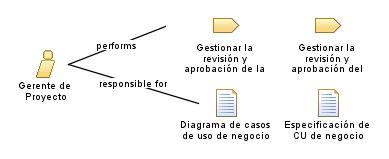

| Role: Gerente de Proyecto |
| |
 |
| Encargado de planificar, coordinar y supervisar todas las actividades relacionadas con el desarrollo del módulo de facturación y contabilidad. Su objetivo principal es asegurar que el proyecto se complete a tiempo, dentro del presupuesto y cumpliendo con los requerimientos establecidos. |
| Synonyms: Director de proyecto, líder de proyecto. |
|
Relationships
 |
| Primary Performs |
|
| Modifies |
|
Main Description
|
Se encarga de liderar y gestionar el proyecto desde la etapa de documentación del proceso inicial hasta la implementación y
puesta en marcha del sistema. Se encarga de definir los objetivos y los alcances del proyecto, asignar recursos, coordinar
a los miembros del equipo y asegurar la comunicación efectiva entre todos los involucrados. Además, supervisa el progreso
del proyecto, gestiona los riesgos y toma decisiones clave para garantizar el éxito del proyecto. |
Staffing
| Skills |
Gestión de proyectos, planificación, coordinación, supervisión, liderazgo, comunicación efectiva, gestión de riesgos, toma
de decisiones, resolución de conflictos, gestión de recursos y presupuesto, conocimientos de metodologías y herramientas de
gestión de proyectos. |
| Synonyms | Director de proyecto, líder de proyecto. |
|